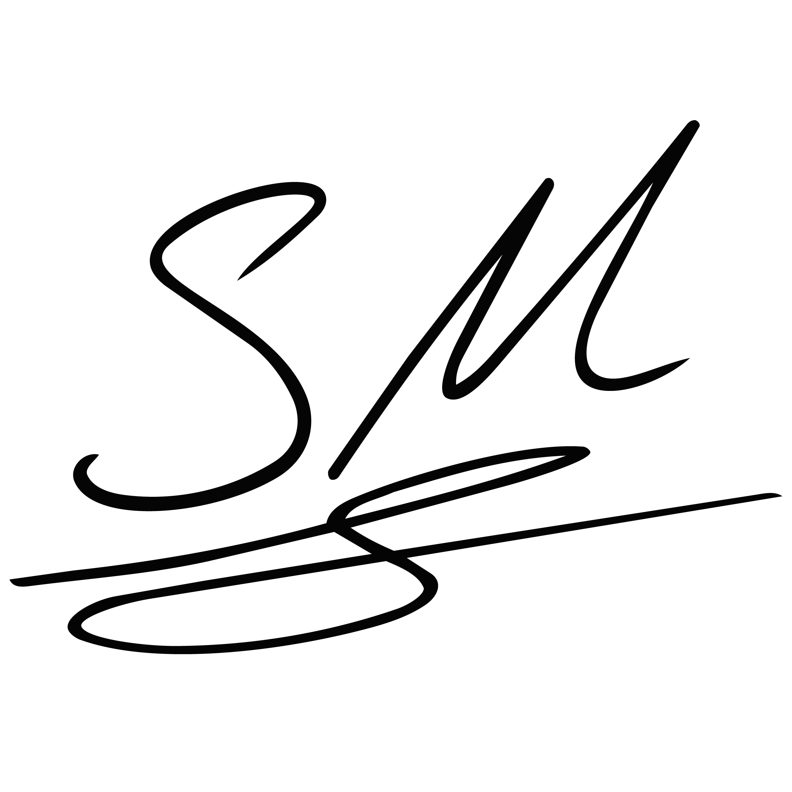
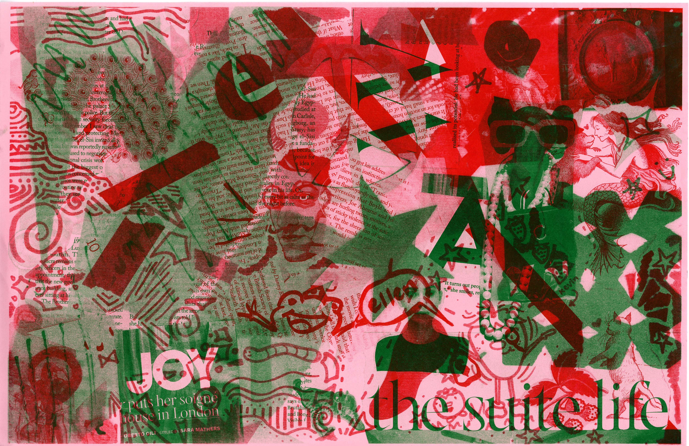
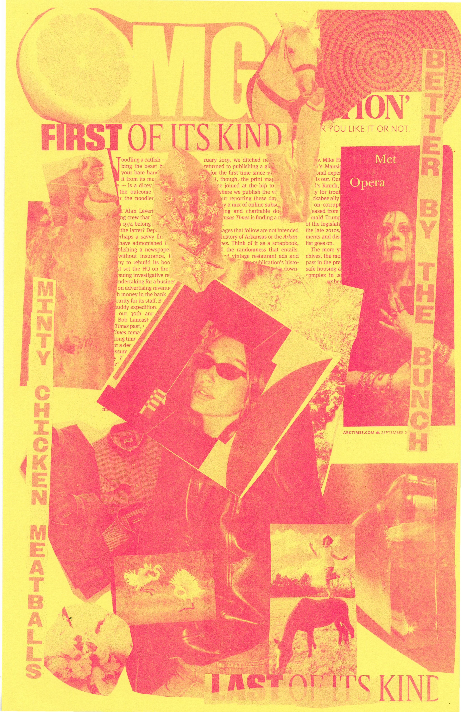
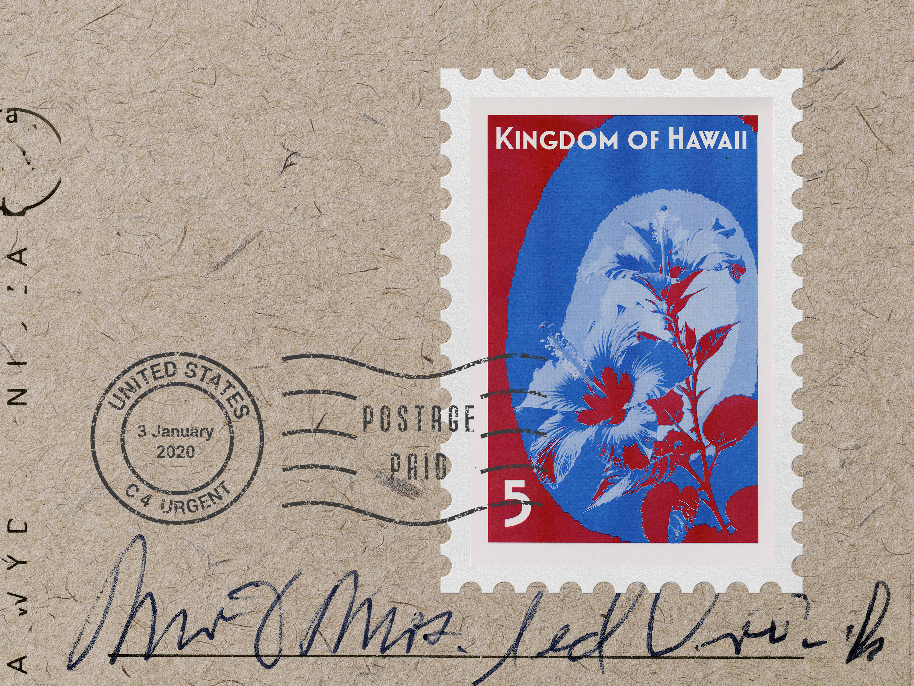
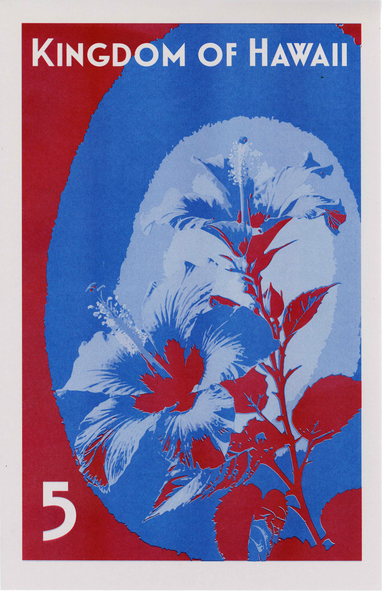

Riso Class Calender
This was a part collaborative project of 12 students and one professor. I was given the opportunity to make a calendar cover for the Risography class using four colors.



This was a part collaborative project of 12 students and one professor. I was given the opportunity to make a calendar cover for the Risography class using four colors.
These were collaborative projects. Working with either one student or a group of cohorts, learning about the Risograph machine.


Based on Hawaiian postage stamps but reimagined for a modern audience as if Hawaii still has its own Kingdom. This poster was a part of a series with four other collaborators creating an Exhibit of Stamps, called the Phaidon Museum. The exhibit was to show how stamps are a product of utility design.


Based on the classic children's rhyme, reimagined with a modern aesthetic and the Risograph printing technique. It is a made as a small zine with a poster on the back.


The cover of This is Water by David Foster Wallace commencement speech was Riso printed using bright red and medium blue on speckle paper. I used different opacities of bright red and medium blue to create a small layering effect of the letters overlapping each other while emphasizing "Water" and used contrasting colors to emphasize about the two different parts of the commencement speech.

This work required two different colors that could merge into one totally different color. I used orange and purple to merge into a burgundy color towards the center. This assignment was used to create four swallow tail birds surrounded by art nouveau boarder and flower motif. Spectrolite was used to separate the artwork into two different colors to mimic a graduation between the two colors. Various other color combinations have been used. Such as hunter green with flat gold and orange with teal.

Copyright © 2026 Samantha McClain